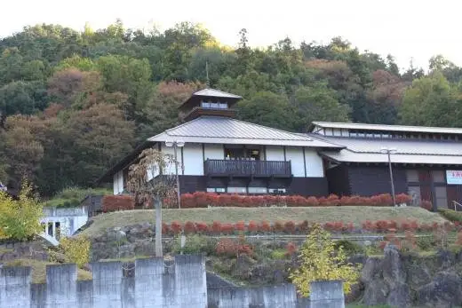
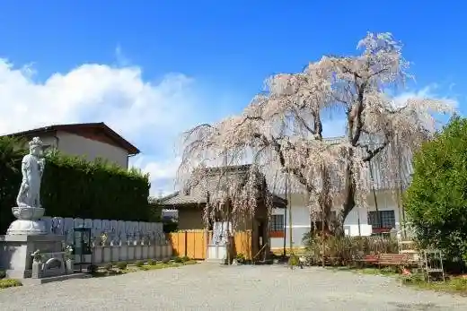
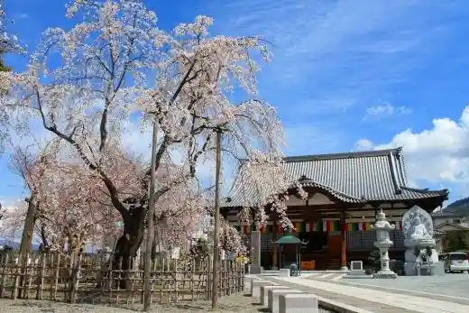
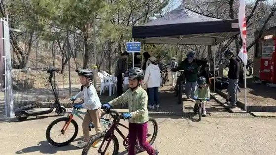
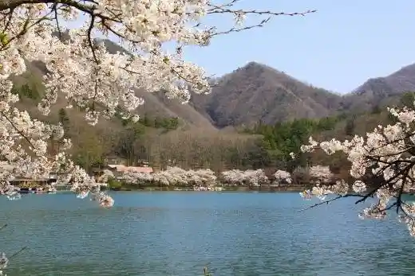

Japan / Yamanashi / Ichikawamisato
Ichikawamisato
Ichikawamisato · Yamanashi
Ichikawamisato
Highlighted on the Yamanashi map.

Sights
Hirashio Genji no Kan (Hirashiogenji no Yakata)
Fukuju In (Fukujuin)

Hoju In Cherry Blossoms (Hojuin no Sakura)

Ichikawa Park MTB Fiirudo

Shi Biren Mizumi (Shibireko)

Kabuki Bunka Park (Kabukibunkakoen)
Ichinomiya Asama Shrine (Ichikawamisato) (Ichimiyasamajinja)